ImagenHub: Standardizing the evaluation of conditional image generation models
Recently, a myriad of conditional image generation and editing models have been developed to serve different downstream tasks, including text-to-image generation, text-guided image editing, subject-driven image generation, control-guided image generation, etc. However, we observe huge inconsistencies in experimental conditions: datasets, inference, and evaluation metrics – render fair comparisons difficult. This paper proposes ImagenHub, which is a one-stop library to standardize the inference and evaluation of all the conditional image generation models. Firstly, we define seven prominent tasks and curate high-quality evaluation datasets for them. Secondly, we built a unified inference pipeline to ensure fair comparison. Thirdly, we design two human evaluation scores, i.e. Semantic Consistency and Perceptual Quality, along with comprehensive guidelines to evaluate generated images. We train expert raters to evaluate the model outputs based on the proposed metrics. Our human evaluation achieves a high inter-worker agreement of Krippendorff’s alpha on 76% models with a value higher than 0.4. We comprehensively evaluated a total of around 30 models and observed three key takeaways: (1) the existing models’ performance is generally unsatisfying except for Text-guided Image Generation and Subject-driven Image Generation, with 74% models achieving an overall score lower than 0.5. (2) we examined the claims from published papers and found 83% of them hold with a few exceptions. (3) None of the existing automatic metrics has a Spearman’s correlation higher than 0.2 except subject-driven image generation. Moving forward, we will continue our efforts to evaluate newly published models and update our leaderboard to keep track of the progress in conditional image generation.
https://tiger-ai-lab.github.io/ImagenHub/
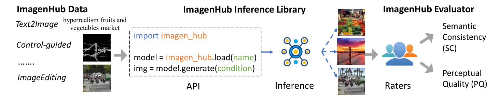
图 1：ImagenHub 框架总览，由新构建的 ImagenHub 数据集、ImagenHub 库以及 ImagenHub 评价平台与标准组成。
With the recent development of diffusion models, image generation has quickly become one of the most popular research areas in AI. To enable controllability in the image generation process, a myriad of conditional image generation models have been proposed in the past year. Diverse set of conditions have been attempted to steer the diffusion process. One of the most popular tasks is text-guided image generation (Ramesh et al., 2022; Rombach et al., 2022; Saharia et al., 2022), which aims to ground on a text prompt to generate the corresponding image. Besides that, there are also subject-conditioned image generation (Gal et al., 2022; Ruiz et al., 2023), text-guided image editing (Brooks et al., 2023), multi-subject-conditioned image generation (Kumari et al., 2023), style-guided image generation (Sohn et al., 2023), etc. These different tasks aim to serve different types of downstream applications by enabling subject-level, background-level, style-level controls. The field is evolving at an unprecedented pace and lots of improvements have been reported in the published papers. However, one glaring issue we observed is the published work are highly inconsistent in their experimental setups. To summarize, the inconsistencies mainly come from three aspects, namely dataset, inference and evaluation:
随着扩散模型的发展，图像生成迅速成为人工智能中最热门的研究方向之一。为使图像生成过程可控，过去一年涌现出大量条件图像生成模型，研究者尝试用多种条件来引导扩散过程。其中最热门的任务之一是文本引导图像生成（Ramesh 等，2022；Rombach 等，2022；Saharia 等，2022），其目标是根据文本提示生成对应图像。此外还有主体条件图像生成（Gal 等，2022；Ruiz 等，2023）、文本引导图像编辑（Brooks 等，2023）、多主体条件图像生成（Kumari 等，2023）、风格引导图像生成（Sohn 等，2023）等。这些任务通过主体级、背景级、风格级的控制，服务于不同类型的下游应用。该领域正以前所未有的速度演进，已发表论文中报告了大量改进。然而，我们观察到一个突出问题：已发表工作在实验设置上高度不一致。概括而言，这些不一致主要来自数据集、推理与评价三个方面：
Dataset: The existing work curated their own evaluation dataset, which makes the comparison of different models totally incomparable.
• 数据集：已有工作各自构建评价数据集，使不同模型之间的比较完全不可比。
Inference: Some work requires heavy hyper-parameter tuning and prompt engineering to achieve reasonable performance, which makes the model less robust. Due the tuning effort on different models differe significantly, their comaprison could become unfair.
• 推理：部分工作需要大量超参数调优与提示词工程才能达到合理性能，模型的鲁棒性因此下降。由于不同模型在调优上的投入差异显著，其比较可能有失公平。
Evaluation: The existing work used different human evaluation protocols and guidelines. This inconsistency renders it impossible to compare human evaluation scores across different methods. Moreover, some of the work either employs a single rater or does not report inter-worker agreement. Thus, the reported results might not be comparable across different papers.
• 评价：已有工作采用不同的人工评价流程与指南，这种不一致使得不同方法的人工评价分数无法相互比较。此外，部分工作只使用单一评分员，或未报告评分者间一致性，因此所报告的结果在不同论文之间可能不可比。
图 2：各任务中的最优与平均模型性能
These three inconsistencies make it nearly impossible to track the real progress in the field of the conditional image generation. Such an issue could greatly hinder the development of this field. The desiderata is to build a centralized effort to fairly evaluate every model. More importantly, this effort needs to be continuous to keep up with the evolvement of the field. Our paper aims to serve this purpose to standardize the serving and evaluation of all open-source conditional image generation models. More specifically, ImagenHub consists of the modules listed in Figure 1.
这三方面的不一致几乎使人无法追踪条件图像生成领域的真实进展，也会严重阻碍该领域的发展。理想做法是集中力量对每一个模型进行公平评价，并且这种努力需要持续进行，以跟上领域演进的步伐。本文正是为此提出 ImagenHub，用以规范所有开源条件图像生成模型的调用与评价。具体而言，ImagenHub 由图 1 所示的几个模块组成。
ImagenHub Dataset. We surveyed the existing public evaluation sets for all the generation tasks and then picked diverse instances from them to build our ImagenHub dataset. ImagenHub dataset consists of 7 subsets, each with 100-200 instances. This dataset aims at standardizing the evaluation input to ensure fair comparison for different models.
ImagenHub 数据集。我们调研了各生成任务的现有公开评价集，并从中挑选多样化样本构建 ImagenHub 数据集。该数据集包含 7 个子集，每个子集 100～200 个样本，旨在规范评价输入，保证不同模型比较的公平性。
ImagenHub Inference Library. We built a ImagenHub library11 1 it’s similar to Huggingface libraries (Wolf et al., 2019; von Platen et al., 2022) to evaluate all the conditional image generation models. We ported the highly dispersed codebase from the existing works and then standardized them into a unified format. During inference, we fixed the hyper-parameters and the prompt format to prevent per-instance prompt or hyper-parameter tuning, which makes the inference of different models fair and reproducible. The library is designed to be easily extendable. Our Appendix A.7, A.8, and A.9 show how a third party and researchers can benefit from our work.
ImagenHub 推理库。我们构建了 ImagenHub 库11 1（其形式类似 Huggingface 系列库（Wolf 等，2019；von Platen 等，2022）），用于评价所有条件图像生成模型。我们把已有工作中高度分散的代码库移植过来，并统一为标准格式。推理时固定超参数与提示词格式，避免针对单个样本进行提示词或超参数调优，从而使不同模型的推理公平且可复现。该库在设计中便于扩展，附录 A.7、A.8 与 A.9 说明了第三方与研究者如何从中受益。
ImagenHub Evaluator. We explored different human evaluation metrics and iterated over different versions of the rating guidelines to improve the inter-rater agreement. We settled on two three-valued rating metrics ‘Semantic Consistency’ and ‘Perceptual Quality’ to achieve generally high inter-worker agreement measured by Fleiss Kappa (Fleiss & Cohen, 1973) and Krippendorff’s Alpha (Krippendorff, 2011). We designed a rating standard to achieve several benefits: (1) Our rating guide is an unambiguous checklist table such that the rater can rate the image with ease. (2) The designed rating guideline is unified on every task type. (3) Sustainability. Since each model is rated individually, previous evaluation results can be reused when new models are added.
ImagenHub 评价器。我们考察了多种人工评价指标，并反复迭代评分指南的不同版本以提升评分者间一致性，最终确定“语义一致性”与“感知质量”两个三值评分指标，在 Fleiss Kappa（Fleiss & Cohen，1973）与 Krippendorff’s Alpha（Krippendorff，2011）上取得普遍较高的一致性。所设计的评分标准带来几方面好处：（1）评分指南是一张无歧义的核对清单表，评分员可以轻松打分；（2）该评分指南在所有任务类型上保持统一；（3）可持续——由于每个模型单独评分，新增模型时可复用此前的评价结果。
We demonstrate our evaluation results in Figure 2, where we show the overall score of the best-performing model and the medium-performing model. Based on our evaluation results in section 5, we made some general observations:
我们在图 2 中展示评价结果，给出表现最优模型与中等水平模型的总体分数。基于第 5 节的评价结果，我们得到以下几点总体观察：
The existing models’ performance is generally unsatisfying except for Text-guided Image Generation and Subject-driven Image Generation.
• 除文本引导图像生成与主体驱动图像生成外，现有模型的表现普遍不理想。
We found that evaluation results from the published papers are generally consistent with our evaluation. 83% of the published result ranking is consistent with our ranking.
• 我们发现已发表论文中的评价结果与我们的评价大体一致，83% 的已发表结果排序与我们的排序一致。
Automatic evaluation metrics do not correlate well with human preference well except subject-driven image generation. The correlation scores are lower than 0.2.
• 除主体驱动图像生成外，自动评价指标与人类偏好的相关性不佳，相关系数低于 0.2。
The goal of conditional image generation is to predict an RGB image , where and are the height and width of the image. The prediction of the target image is given a set of input conditions , where , where denotes the i-th condition. In the problem, we aim at learning a prediction function with deep learning models. Here we mainly consider parameterized with diffusion models. Here we list a set of tasks we consider in Figure 3, where can be represented as text prompt, image mask, subject image, source image, background image, control signal, etc.
条件图像生成的目标是预测一张 RGB 图像 ，其中 与 分别为图像的高与宽。目标图像的预测以一组输入条件 为前提，其中 ， 表示第 i 个条件。该问题旨在用深度学习模型学习一个预测函数 ，这里我们主要考虑由扩散模型参数化的 。图 3 列出了我们所考虑的一组任务，其中 可表示为文本提示、图像掩码、主体图像、源图像、背景图像、控制信号等。
Task Definition. We formally define the tasks we consider as follows:
任务定义。我们所考虑的任务形式化定义如下：
Text-guided Image Generation: , where is a text prompt describing a scene. The goal is to generate an image consistent with the text description.
• 文本引导图像生成：，其中 是描述某个场景的文本提示，目标是生成与该文本描述一致的图像。
Mask-guided Image Editing: , where is a binarized masked image, and is a source image. The goal is to modify given in the masked region according to .
• 掩码引导图像编辑：，其中 为二值化掩码图像， 为源图像，目标是对 在掩码区域内的部分进行修改，使其符合 。
Text-guided Image Editing: . It’s similar to Mask-guided Image Editing except that there is no mask being provided, the model needs to figure out the region automatically.
• 文本引导图像编辑：。该任务与掩码引导图像编辑类似，只是不提供掩码，模型需要自行确定编辑区域。
Subject-driven Image Generation: , where is a set of images regarding a specific subject, which normally ranges from 3-5. The goal is to generate an image according to regarding the subject .
• 主体驱动图像生成：，其中 是关于特定主体的一组图像，通常为 3～5 张，目标是生成符合 且与主体 一致的图像。
Subject-driven Image Editing: , where is a source image and is the subject reference. The goal is to replace the subject in with the given subject .
• 主体驱动图像编辑：，其中 为源图像， 为主体参考，目标是把 中的主体替换为给定主体 。
Multi-concept Image Composition: , where and are two sets of concept images. The goal is to compose them together to generate a new image according to the text description .
• 多概念图像组合：，其中 与 为两组概念图像，目标是根据文本描述 将它们组合成一幅新图像。
Control-guided Image Generation: , where is the control signal like depth map, canny edge, bounding box, etc. The goal is to generate an image following the low-level visual cues.
• 控制引导图像生成：，其中 为深度图、canny 边缘、边界框等控制信号，目标是按照这些底层视觉线索生成图像。
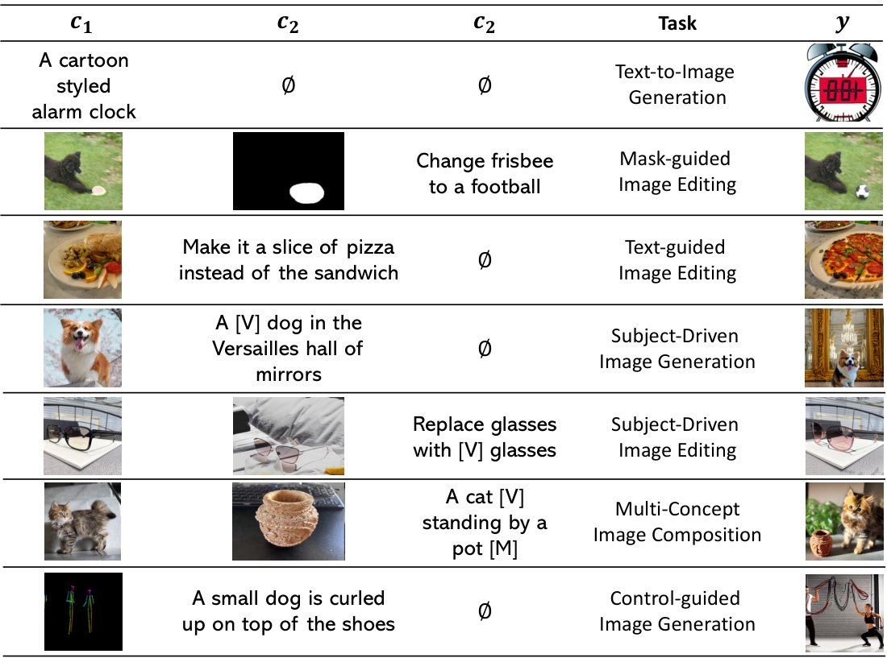
图 3：所有条件图像生成任务的可视化。这里考虑含 1～3 个条件的任务， 表示空。特殊词元 [V] 与 [M] 为特殊标识符。
Multimodal Conditional Image Synthesis. Recent works in multimodal conditional image synthesis often rely on pre-trained vision-language models such as CLIP (Radford et al., 2021) and pre-trained large diffusion models like Stable Diffusion (Rombach et al., 2022). CLIP bridges the gap between textual descriptions and visual content, while Stable Diffusion is a latent diffusion model trained on a massive dataset. CLIP and Stable Diffusion are now widely used as core components in applications such as text-to-image generation, text-guided image editing (Patashnik et al., 2021; Meng et al., 2021; Couairon et al., 2022; Mokady et al., 2022; Zhang et al., 2023), and mask-guided image editing (Avrahami et al., 2022; Nichol et al., 2022). Another interesting research direction is image subject personalization with a few or even one image of the subject. Textual Inversion (Gal et al., 2022) optimizes a text token vector to represent the subject, while DreamBooth (Ruiz et al., 2023) finetunes the Stable Diffusion model to learn the new subject concept efficiently. These works foster research in potential applications like subject-driven image generation and editing (Li et al., 2023a; Li et al., 2023b; Gu et al., 2023), and even multi-concept image compositions (Kumari et al., 2023). To explore more control conditions, ControlNet (Zhang & Agrawala, 2023) proposed the usage of zero convolution on the Stable Diffusion model to support additional guided image control. This work brings up the idea of the control-guided image generation task and inspired later work (Qin et al., 2023) on improving the control versatility.
多模态条件图像合成。近期多模态条件图像合成工作通常依赖 CLIP（Radford 等，2021）等预训练视觉-语言模型，以及 Stable Diffusion（Rombach 等，2022）等预训练大型扩散模型。CLIP 弥合了文本描述与视觉内容之间的鸿沟，Stable Diffusion 则是在大规模数据集上训练的潜扩散模型。二者现已作为核心组件被广泛用于文本到图像生成、文本引导图像编辑（Patashnik 等，2021；Meng 等，2021；Couairon 等，2022；Mokady 等，2022；Zhang 等，2023）与掩码引导图像编辑（Avrahami 等，2022；Nichol 等，2022）等应用。另一个有趣方向是用主体的一张或少数几张图像做图像主体个性化：Textual Inversion（Gal 等，2022）优化一个文本词元向量来表示主体，DreamBooth（Ruiz 等，2023）则微调 Stable Diffusion 以高效学习新的主体概念。这些工作推动了主体驱动图像生成与编辑（Li 等，2023a；Li 等，2023b；Gu 等，2023）乃至多概念图像组合（Kumari 等，2023）等潜在应用的研究。为探索更多控制条件，ControlNet（Zhang & Agrawala，2023）提出在 Stable Diffusion 上使用零卷积以支持额外的引导图像控制，由此引出控制引导图像生成任务，并启发了后续提升控制通用性的工作（Qin 等，2023）。
AI-generated Image Assessment. Evaluating AI-generated images holistically is a complex and open problem (Salimans et al., 2016). Researchers have proposed various automatic metrics. In the image quality aspect, Inception score (Salimans et al., 2016), FID (Heusel et al., 2017) are often used. These methods rely on statistics from an InceptionNet pre-trained on the ImageNet dataset. Despite being widely adopted due to their sensitivity to small changes in images, these metrics are not ideal. They are biased towards the ImageNet dataset, resulting in inadequate evaluations (Borji, 2021). Later works like LPIPS (Zhang et al., 2018) and DreamSim (Fu et al., 2023) proposed better ways to measure the perceptual similarity. In the semantic consistency aspect, the CLIP score (Hessel et al., 2021) is often used to measure the vision-language alignment between the generated image and the prompt. Researchers also worked on alternative methods such as BLIP score (Li et al., 2022) and ImageReward (Xu et al., 2023). However, in some tasks like subject-driven image generation and editing, the automatic measurement of semantic consistency is still an open problem. One long-established yet effective approach to assessing AI-generated image performance is to rely on human annotators to assess the visual quality (Denton et al., 2015; Isola et al., 2017; Meng et al., 2021; Chen et al., 2023). The downside is that it entails a reliance on human judgment, which can introduce subjectivity and potentially limit scalability. To mitigate the downsides, the human evaluation design has to be unambiguous and easy to follow.
AI 生成图像的评估。整体评价 AI 生成图像是一个复杂且开放的问题（Salimans 等，2016）。研究者提出了多种自动指标：在图像质量方面常用 Inception score（Salimans 等，2016）与 FID（Heusel 等，2017），这些方法依赖在 ImageNet 上预训练的 InceptionNet 的统计量；尽管因对图像微小变化敏感而被广泛采用，它们并不理想——对 ImageNet 数据集存在偏置，导致评价不充分（Borji，2021）。后续工作如 LPIPS（Zhang 等，2018）与 DreamSim（Fu 等，2023）提出了度量感知相似度的更好方法。在语义一致性方面，常用 CLIP score（Hessel 等，2021）度量生成图像与提示词之间的视觉-语言对齐程度；研究者也探索了 BLIP score（Li 等，2022）与 ImageReward（Xu 等，2023）等替代方法。然而在主体驱动图像生成与编辑等任务中，语义一致性的自动度量仍是开放问题。评估 AI 生成图像性能还有一条由来已久但有效的路径：依靠人工标注者评估视觉质量（Denton 等，2015；Isola 等，2017；Meng 等，2021；Chen 等，2023）。其缺点在于依赖人类判断，会引入主观性并可能限制可扩展性。为缓解这些问题，人工评价的设计必须无歧义且易于遵循。
Our proposed metric can be used in all seven tasks with the same standard. We adopt two major evaluation metrics, namely semantic consistency and perceptive quality . These two metrics measure the quality of the generated images from two aspects. The semantic consistency measures how well the generated image is aligned with the condition . Specifically, we define the semantic consistency score as:
我们提出的指标可用同一标准应用于全部七个任务。我们采用两个主要评价指标，即语义一致性 与感知质量 ，从两个方面度量生成图像的质量。语义一致性度量生成图像与条件 的对齐程度。具体地，我们把语义一致性分数定义为：
| (1) |
where is a modularized function to compute the consistency between and a single condition . We set , where 0 means inconsistent, 0.5 means partially consistent and 1 means fully consistent. With this formulation, as long as the output is inconsistent with any of the conditions, the evaluation score should become zero. Otherwise, the aggregation function will pick the lowest consistency score from all the conditions. On the other hand, perceptive quality measures the image quality, i.e. whether the image contains artifacts, is blurry, or has an unnatural sense. we set perceptive quality , where 0 means extremely poor quality, 0.5 means the image has an acceptable quality and 1 means high quality. In these experiments, each model is rated individually. We train human raters to estimate the function and function with comprehensive guidelines in Table 1. We derive as the overall rating of a model. One benefit of using geometric mean as the design choice is that the rating is penalized when one of the aspect scores is too low. We further studied the configuration in section 5.
其中 是一个模块化函数，用于计算 与单个条件 之间的一致性；我们设定 ，0 表示不一致，0.5 表示部分一致，1 表示完全一致。按此定义，只要输出与任一条件不一致，评价分数即为零；否则聚合函数取所有条件中最低的一致性分数。另一方面，感知质量度量图像质量，即图像是否含有伪影、是否模糊或是否有不自然感；我们设定感知质量 ，0 表示质量极差，0.5 表示质量尚可接受，1 表示高质量。在这些实验中，每个模型单独评分。我们培训评分员，依据表 1 中的详尽指南来估计 函数与 函数，并把 作为模型的总体评分。采用几何平均这一设计的好处在于：当某一方面的分数过低时，总体评分会被惩罚。我们在第 5 节进一步研究该配置。
| Condition 1 | Condition 2 | Condition 3 | SC rating |
| Inconsistent | Any | Any | 0 |
| Any | Inconsistent | Any | 0 |
| Any | Any | Inconsistent | 0 |
| Partially Consistent | Any | Any | 0.5 |
| Any | Partially Consistent | Any | 0.5 |
| Any | Any | Partially Consistent | 0.5 |
| Mostly Consistent | Mostly Consistent | Mostly Consistent | 1.0 |
| Subjects in image | Artifacts | Unusual sense | PQ rating |
| Unrecognizable | Any | Any | 0 |
| Any | Serious | Any | 0 |
| Recognizable | Moderate | Any | 0.5 |
| Recognizable | Any | Moderate | 0.5 |
| Recognizable | Little/None | Little/None | 1.0 |
表 1：计算 SC 与 PQ 分数的评分指南。详见 A.2 小节。
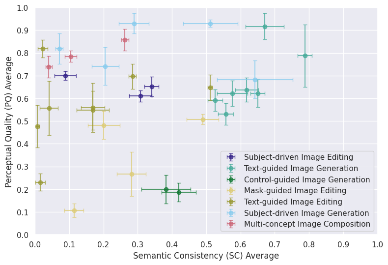
图 4：各任务中的模型性能与标准差。
We present a standardized dataset for each type of task. The information of the datasets is shown in Table 2. Some models have different standards of inputs in one task. For example, in the text-guided image editing task, DiffEdit is global description-guided while InstructPix2Pix is instruction-guided. We manually created the equivalent meaning prompts for both methods so they can be aligned. All datasets contain a huge variety of test cases to mimic the diversity in real-life situations. We hosted all of our datasets on the HuggingFace dataset for easy access and maintenance. Here we demonstrate all the evaluated models in Table 3.
我们为每类任务提供一个标准化数据集，数据集信息见表 2。同一任务下不同模型的输入标准可能不同，例如在文本引导图像编辑任务中，DiffEdit 依据全局描述，而 InstructPix2Pix 依据指令。我们为两种方法手工编写了语义等价的提示词，使二者可以对齐。所有数据集都包含种类丰富的测试用例，以模拟真实场景中的多样性。我们把全部数据集托管在 HuggingFace 数据集上，便于获取与维护。表 3 列出了所有被评测的模型。
| Task | Data Source | Inference Dataset size | ||||
| Text-guided Image Generation |
|
197 | ||||
| Mask-guided Image Editing |
|
179 | ||||
| Text-guided Image Editing |
|
179 | ||||
| Subject-driven Image Generation |
|
150 | ||||
| Multi-concept Image Composition |
|
102 | ||||
| Subject-driven Image Editing | DreamEditBench (Li et al., 2023b) | 154 | ||||
| Control-guided Image Generation | HuggingFace community | 150 | ||||
表 2：七个核心任务的全部人工评价数据集。
| Model | #Params | Runtime | Keywords for technical detail |
| Text-to-Image Generation | |||
| Dalle-3 (openai, 2023) | - | - | Recaptioned training data |
| MidJourney (midjourney, 2023) | - | - | - |
| Dalle-2 (Ramesh et al., 2022) | 3.5B | 10s | unCLIP, two-stage |
| Stable Diffusion (Rombach et al., 2022) | 0.8B | 3s | Latent Diffusion |
| DeepFloydIF (deep floyd.ai, 2023) | 4.3B | 37s | Cascaded Pixel Diffusion |
| OpenJourney (openjourney.ai, 2023) | 0.8B | 3s | SD, Midjourney data |
| Stable Diffusion XL (stability.ai, 2023) | 2.3B | 11s | Stable Diffusion, X-Large |
| Mask-guided Image Editing | |||
| BlendedDiffusion (Avrahami et al., 2022) | 0.5B | 57s | Noise Blending, DDPM+CLIP |
| GLIDE (Nichol et al., 2022) | 3.5B | 19s | CLIP, Diffusion |
| SD-Inpaint (runwayml, 2023) | 1.1B | 11s | SD, Inpainting training |
| SDXL-Inpaint (stability.ai, 2023) | 2.7B | 36s | SDXL, Inpainting training |
| Text-guided Image Editing | |||
| SDEdit (Meng et al., 2021) | 1.3B | 13s | SDE Prior |
| Text2Live (Bar-Tal et al., 2022) | 3.1M | 36s | Zero-shot, Edit layer |
| DiffEdit (Couairon et al., 2022) | 1.3B | 29s | Mask estimation |
| Cycle Diffusion (Wu & la Torre, 2023) | 1.1B | 9s | DPM-Encoder, Zero-shot |
| Prompt-to-Prompt (Mokady et al., 2022) | 1.1B | 2m | Cross-Attention |
| Pix2PixZero (Parmar et al., 2023) | 1.1B | 21s | Cross-Attention, Zero Prompt |
| InstructPix2Pix (Brooks et al., 2023) | 1.1B | 11s | SD, synthetic P2P data |
| MagicBrush (Zhang et al., 2023) | 1.1B | 7s | SD, MagicBrush data |
| Subject-driven Image Generation | |||
| Textual Inversion (Gal et al., 2022) | 1.1B | 15m | Word embedding tuning |
| DreamBooth (Ruiz et al., 2023) | 1.1B | 10m | Finetuning with preservation loss |
| DreamBooth-Lora (Hu et al., 2021) | 1.1B | 8m | DreamBooth + Low-Rank Adaptation |
| SuTI (Chen et al., 2023) | 2.5B | 30s | In-context + Apprenticeship learning |
| BLIP-Diffusion (Li et al., 2023a) | 1.1B | 8s | Pretrained encoder, Zero-shot |
| Subject-driven Image Editing | |||
| DreamEdit (Li et al., 2023b) | 1.1B | 8m | Dreambooth + Region proposal |
| PhotoSwap (Gu et al., 2023) | 1.1B | 7m | Dreambooth + Cross-Attention |
| BLIP-Diffusion (Li et al., 2023a) | 1.1B | 18s | Pretrained encoder, Zero-shot |
| Multi-concept Image Composition | |||
| CustomDiffusion (Kumari et al., 2023) | 1.1B | 19m | Cross-attention updating |
| DreamBooth (Ruiz et al., 2023) | 1.1B | 11m | Finetuning with preservation loss |
| TextualInversion (Gal et al., 2022) | 1.1B | 32m | Word embedding tuning |
| Control-guided Image Generation | |||
| ControlNet (Zhang & Agrawala, 2023) | 1.4B | 8s | Zero convolution + Frozen model |
| UniControl (Qin et al., 2023) | 1.4B | 23s | Multi-task pretraining, Zero-shot |
表 3：所有被评测模型的概览及其参数量与运行时间。模型按时间顺序列出。Dalle-3 与 MidJourney 的参数量与运行时间未知；MidJourney 未开源，也没有技术细节的白皮书。
Experiment Setup. All the models either used the default setting from the official implementation or the setting suggested in HuggingFace documentation (von Platen et al., 2022). We disabled negative prompts and any prompt engineering tricks to ensure a fair comparison. We conducted human evaluation by recruiting participants from Prolific to rate the images, and our own researchers also took part in the image rating process. We assigned 3 raters for each model and computed the SC score, PQ score, and Overall human score. Then we computed the Fleiss kappa (Fleiss & Cohen, 1973) for each mentioned score. We also computed Krippendorff’s Alpha (Krippendorff, 2011), which is expected to yield a higher value than Fleiss kappa. This distinction arises from the nature of the rating categories, with Fleiss’ Kappa assuming nominal categories and Krippendorff’s Alpha accommodating ordinal inputs. Both Fleiss’ Kappa and Krippendorff’s Alpha are bounded within the range of [-1, 1], where the value indicates an agreement and closer proximity to 1 indicates a higher degree of agreement. The design choices are explained in subsection 5.2 and Appendix A.6.
实验设置。所有模型均使用官方实现中的默认设置，或 HuggingFace 文档（von Platen 等，2022）建议的设置。我们停用负向提示词与任何提示词工程技巧，以保证公平比较。人工评价通过 Prolific 招募参与者对图像打分，我们的研究人员也参与了图像评分。每个模型分配 3 名评分员，计算 SC 分数、PQ 分数与总体人工分数；随后为上述每个分数计算 Fleiss kappa（Fleiss & Cohen，1973）。我们还计算了 Krippendorff’s Alpha（Krippendorff，2011），其值通常高于 Fleiss kappa——这一差异源于评分类别的性质：Fleiss’ Kappa 假定类别为名义型，而 Krippendorff’s Alpha 可处理序数型输入。Fleiss’ Kappa 与 Krippendorff’s Alpha 都落在 [-1, 1] 区间内， 表示存在一致性，越接近 1 表示一致性越高。相关设计选择见 5.2 小节与附录 A.6。
Results. In Figure 4, we present an overview of the model performance across various tasks. Our findings indicate that the performance of the current models is generally underwhelming, with the exception being Text-guided Image Generation and Subject-driven Image Generation, which have models reaching higher than 0.6 on both SC and PQ averages. The detailed report on each model’s performance is shown on Table 4. We noticed that the overall automated metrics’ correlation with the SC score and PQ score in each task is below 0.2 except subject-driven image editing task. Metric values are at Table 5 and Table 6.
结果。图 4 给出各任务上模型性能的概览。我们发现，当前模型的表现总体上不尽如人意，只有文本引导图像生成与主体驱动图像生成中有模型在 SC 与 PQ 均值上超过 0.6。各模型性能的详细报告见表 4。我们注意到，除主体驱动图像编辑任务外，各任务上自动指标与 SC 分数、PQ 分数的相关性均低于 0.2。具体数值见表 5 与表 6。
| Model | LPIPS ↓ | CLIP ↑ | Overall | ||||
| Text-guided Image Generation | |||||||
| Dalle-3 | N/A | 0.2697 | 0.790.02 | 0.790.14 | 0.760.08 | 0.19 | 0.34 |
| Midjourney | N/A | 0.2839 | 0.670.06 | 0.920.06 | 0.730.07 | 0.34 | 0.51 |
| DeepFloydIF | N/A | 0.2814 | 0.650.02 | 0.620.06 | 0.590.02 | 0.32 | 0.51 |
| Stable Diffusion XL | N/A | 0.2886 | 0.620.03 | 0.640.05 | 0.590.03 | 0.37 | 0.61 |
| Dalle-2 | N/A | 0.2712 | 0.580.04 | 0.620.06 | 0.540.04 | 0.27 | 0.40 |
| OpenJourney | N/A | 0.2814 | 0.530.02 | 0.590.05 | 0.500.02 | 0.30 | 0.47 |
| Stable Diffusion 2.1 | N/A | 0.2899 | 0.560.02 | 0.530.05 | 0.500.03 | 0.38 | 0.50 |
| Mask-guided Image Editing | |||||||
| SDXL-Inpainting | 0.15 | 0.2729 | 0.490.05 | 0.510.02 | 0.370.05 | 0.50 | 0.72 |
| SD-Inpainting | 0.21 | 0.2676 | 0.280.04 | 0.270.10 | 0.170.07 | 0.31 | 0.49 |
| GLIDE | 0.18 | 0.2578 | 0.200.05 | 0.480.06 | 0.160.05 | 0.33 | 0.56 |
| BlendedDiffusion | 0.33 | 0.2594 | 0.120.03 | 0.110.03 | 0.050.02 | 0.36 | 0.44 |
| Text-guided Image Editing | |||||||
| MagicBrush | 0.22 | 0.2675 | 0.510.01 | 0.650.06 | 0.470.02 | 0.44 | 0.67 |
| InstructPix2Pix | 0.32 | 0.2616 | 0.290.01 | 0.700.06 | 0.270.02 | 0.55 | 0.74 |
| Prompt-to-prompt | 0.40 | 0.2674 | 0.170.05 | 0.550.09 | 0.150.06 | 0.36 | 0.53 |
| CycleDiffusion | 0.28 | 0.2692 | 0.170.03 | 0.560.11 | 0.140.04 | 0.41 | 0.63 |
| SDEdit | 0.61 | 0.2872 | 0.040.03 | 0.560.12 | 0.040.03 | 0.13 | 0.13 |
| Text2Live | 0.17 | 0.2628 | 0.020.01 | 0.820.04 | 0.020.02 | 0.10 | 0.17 |
| DiffEdit | 0.22 | 0.2425 | 0.020.01 | 0.230.04 | 0.010.01 | 0.24 | 0.24 |
| Pix2PixZero | 0.60 | 0.2510 | 0.010.00 | 0.480.09 | 0.010.01 | 0.37 | 0.37 |
| Subject-driven Image Generation | |||||||
| SuTI | 0.77 | 0.2895 | 0.640.11 | 0.680.08 | 0.580.12 | 0.20 | 0.39 |
| DreamBooth | 0.77 | 0.2847 | 0.510.08 | 0.930.02 | 0.550.11 | 0.37 | 0.60 |
| BLIP-Diffusion | 0.77 | 0.2729 | 0.290.04 | 0.930.04 | 0.350.06 | 0.22 | 0.39 |
| TextualInversion | 0.81 | 0.2680 | 0.210.04 | 0.740.08 | 0.210.05 | 0.35 | 0.52 |
| DreamBooth-Lora | 0.82 | 0.2988 | 0.070.01 | 0.820.07 | 0.090.01 | 0.29 | 0.37 |
| Subject-driven Image Editing | |||||||
| PhotoSwap | 0.34 | 0.2846 | 0.340.02 | 0.650.04 | 0.360.02 | 0.35 | 0.46 |
| DreamEdit | 0.22 | 0.2855 | 0.310.03 | 0.610.03 | 0.320.03 | 0.33 | 0.52 |
| BLIP-Diffusion | 0.25 | 0.2901 | 0.090.03 | 0.700.02 | 0.090.03 | 0.41 | 0.47 |
| Multi-concept Image Composition | |||||||
| CustomDiffusion | 0.79 | 0.2929 | 0.260.01 | 0.860.05 | 0.290.01 | 0.73 | 0.88 |
| DreamBooth | 0.78 | 0.2993 | 0.110.02 | 0.780.02 | 0.130.02 | 0.61 | 0.71 |
| TextualInversion | 0.80 | 0.2548 | 0.040.01 | 0.740.05 | 0.050.01 | 0.62 | 0.77 |
| Control-guided Image Generation | |||||||
| ControlNet | 0.80 | 0.2555 | 0.420.05 | 0.190.04 | 0.230.04 | 0.37 | 0.57 |
| UniControl | 0.82 | 0.2604 | 0.380.07 | 0.200.06 | 0.230.07 | 0.36 | 0.58 |
表 4：七个核心任务中全部被评测的模型。Overall 为所有 的平均值； 与 分别表示总体均值上的 Fleiss’ Kappa 与 Krippendorff’s alpha。更多自动指标结果见附录表 5，相关性见表 6。
Text-Guided Image Generation. We observe that all models are able to generate high-quality images. Regarding semantic consistency, all models have a good understanding of the general prompts, while Stable Diffusion XL is better at understanding complex prompts. For example, it exhibits a high degree of accuracy and detail on the prompt “A panda making latte art.” while other models often misunderstood the prompt as “panda latte art”. DALLE-3 and Midjourney understand most of the complex prompts than other models, and DALLE-3 is slightly better on conflicting prompts.
文本引导图像生成。我们观察到所有模型都能生成高质量图像。在语义一致性方面，所有模型都能较好地理解一般提示词，而 Stable Diffusion XL 更擅长理解复杂提示词；例如在提示词“一只熊猫正在制作拿铁拉花”上，它表现出很高的准确度与细节，而其他模型常把该提示词误解为“熊猫拿铁艺术”。DALLE-3 与 Midjourney 比其他模型更能理解多数复杂提示词，且 DALLE-3 在冲突提示词上略胜一筹。
Mask-guided Image Editing. We observed the outputs commonly contain obvious artifacts in the masked region boundaries for Stable Diffusion and GLIDE. While Blended Diffusion and Stable Diffusion XL do not suffer from the same issue, they often produce unrecognizable outputs. Stable Diffusion XL obtains the best results but the overall model performance is still far from satisfactory. Another common issue is that the filled regions can hardly harmonize with the background.
掩码引导图像编辑。我们观察到 Stable Diffusion 与 GLIDE 的输出在掩码区域边界处普遍存在明显伪影；Blended Diffusion 与 Stable Diffusion XL 虽无此问题，却常常生成无法辨认的输出。Stable Diffusion XL 取得最佳结果，但模型整体性能仍远未令人满意。另一个常见问题是填充区域难以与背景协调。
Text-guided Image Editing. One key requirement is to edit the image precisely and keep the background untouched. This requirement is indeed challenging because the network has to understand of editing region from the semantic inputs. We discovered that Prompt-to-Prompt, Pix2PixZero, and SDEdit, despite generating high-quality images, often result in completely different backgrounds. We also spotted that in many cases Text2Live will simply return the input as output, this phenomenon also occasionally happened in other models. For paper claims, our evaluation ranking aligns with the findings from CycleDiffsuion, InstructPix2Pix, MagicBrush, Prompt-to-Prompt, and DiffEdit. We found our evaluation ranking does not align with Pix2PixZero, since their paper only tested on word-swapping examples, which is not able to generalize to more complex edits.
文本引导图像编辑。一项关键要求是精确编辑图像并保持背景不变，该要求确有难度，因为网络必须从语义输入中理解编辑区域。我们发现 Prompt-to-Prompt、Pix2PixZero 与 SDEdit 虽能生成高质量图像，却常常产生完全不同的背景；我们还注意到，Text2Live 在许多情况下会直接把输入作为输出，这一现象在其他模型中也偶有发生。就论文主张而言，我们的评价排序与 CycleDiffsuion、InstructPix2Pix、MagicBrush、Prompt-to-Prompt 和 DiffEdit 的结论一致；但与 Pix2PixZero 不一致，因为其论文只在词替换样例上测试，无法推广到更复杂的编辑。
Subject-driven Image Generation. Our evaluation results largely align with DreamBooth, BLIP-Diffusion, and SuTI findings. Specifically, Textual inversion struggles to maintain target subject features. DreamBooth can imitate subjects based on images but occasionally resorts to copying learned images. DreamBooth-Lora struggles to generate desired subjects but can follow context prompts. BLIP-Diffusion can mimic target subject features but struggles with details. SuTI maintains high consistency with desired subjects and context, with tolerable artifacts in some cases.
主体驱动图像生成。我们的评价结果与 DreamBooth、BLIP-Diffusion 和 SuTI 的发现大体一致。具体地，Textual inversion 难以保持目标主体特征；DreamBooth 能依据图像模仿主体，但偶尔退化为复制所学图像；DreamBooth-Lora 难以生成期望的主体，却能遵循上下文提示词；BLIP-Diffusion 可模仿目标主体特征，但在细节上表现不佳；SuTI 与期望主体和上下文保持高度一致，个别情况下存在可容忍的伪影。
Multi-concept Image Composition. Our evaluations validate that CustomDiffusion is consistently better than the other two models. However, while it learns the given multiple subjects’ features better, it could fail to follow the prompts in many cases, especially on actions and positional words. In contrast, DreamBooth learns the correct subjects in some cases, and TextualInversion rarely learns the correct subjects. Interestingly, in some cases where DreamBooth does not learn the correct subjects, it could still follow the prompts correctly.
多概念图像组合。我们的评价验证了 CustomDiffusion 始终优于另外两个模型。不过，它虽然更好地学到了给定的多个主体特征，却常无法遵循提示词，尤其是在动作与方位词上。相比之下，DreamBooth 在某些情况下能学到正确主体，而 TextualInversion 很少能学到正确主体。有意思的是，在 DreamBooth 未学到正确主体的某些情况下，它仍能正确遵循提示词。
Subject-driven Image Editing. It is essential to modify the subject from the source to the target without causing excess changes to the background. Human evaluation is also conducted in DreamEdit for the comparison between Photoswap and DreamEdit, but our rankings differ due to varying evaluation criteria. PhotoSwap can adapt to the target subject from the source naturally in most cases but rarely preserves the background well. DreamEdit maintains the context in most cases but sometimes leaves observable distortions at the edge of contextualization. BLIP-Diffusion fails the adaptation most of the time, compromising for a more realistic generation.
主体驱动图像编辑。关键在于把主体由源主体改为目标主体，同时不对背景造成过多改变。DreamEdit 中也做了人工评价来比较 Photoswap 与 DreamEdit，但由于评价标准不同，我们的排序与之不同。PhotoSwap 多数情况下能自然地把源主体适配为目标主体，但很少能很好地保留背景；DreamEdit 多数情况下能保持上下文，但有时会在上下文化区域的边缘留下可见的畸变；BLIP-Diffusion 多数时候适配失败，以换取更真实的生成结果。
Control-guided Image Generation. Our evaluation shows there is no significant difference between the two models in both automatic metrics and human evaluation metrics. While UniControl also reported that there is no significant difference in automatic metrics, our human evaluation results do not align. This can be due to the different evaluation standards and aspects. Nevertheless, it has come to our attention that neither of these models demonstrates a high level of robustness. Scratches often appeared on the generated image.
控制引导图像生成。我们的评价显示，两个模型在自动指标与人工评价指标上均无显著差异。UniControl 也报告自动指标上无显著差异，但我们的人工评价结果与之不符，这可能源于评价标准与评价方面不同。尽管如此，我们注意到这两个模型的鲁棒性都不高，生成图像中常出现划痕。
Method of overall human score computation. We set the overall score of the model as the geometric mean of SC and PR score (i.e. ). But we also explored the weighted sum setting , where both and are in [0, 1]. We experimented and found that the weighted sum setting yields a different ranking in the models. Take the text-guided image editing task as an example, as in Appendix Table 7, Text2Live outperforms CycleDiffusion in the weighted sum setting even though we found that CycleDiffusion performs better in the human examination. We investigated and found that a majority of results in Text2Live simply return the input as output (in that case SC=0 and PQ=1). We tried adjusting the weightings but it still failed to reflect the actual performance of the model. Thus we decided to use the geometric mean setting to penalize the models.
总体人工分数的计算方法。我们把模型的总体分数设为 SC 与 PR 分数的几何平均（即 ），同时也考察了加权和设定 ，其中 与 均属于 [0, 1]。实验发现，加权和设定会给出不同的模型排序。以文本引导图像编辑任务为例（见附录表 7），在加权和设定下 Text2Live 优于 CycleDiffusion，而人工检查却显示 CycleDiffusion 表现更好。经查，Text2Live 的多数结果直接把输入作为输出（此时 SC=0 而 PQ=1）。我们尝试调整权重，仍无法反映模型的真实性能，因此决定采用几何平均设定以对模型施加惩罚。
Design choice of human evaluation metric range. When it comes to human evaluation on a massive scale, it’s essential to create a system that’s easy to understand and quick to use. In this investigation, we undertake an exploration into how different settings in this evaluation method can affect the results, showing in Appendix Table 8. Initially, our approach entailed the utilization of a range encompassing [0, 0.5, 1, 2] for both the Semantic Consistency (SC) score and the Perception Quality (PQ) score, where 2 means the image is perfect. However, this configuration yielded suboptimal results in the Fleiss Kappa. Subsequently, an alternative configuration was employed, narrowing the range to [0, 1] for both the SC and PQ scores. This adjustment, while accommodating a binary classification, was observed to yield values that were overly polarized and extreme. To find the right balance between keeping values in a reasonable range and making sure the evaluation method is reliable, we resolved to define a range of [0, 0.5, 1] while providing explicit and unambiguous guidelines.
人工评价指标取值区间的设计选择。在大规模人工评价中，建立一套易于理解、使用快捷的体系十分必要。本部分考察该评价方法中不同设定对结果的影响，结果见附录表 8。最初我们对语义一致性（SC）分数与感知质量（PQ）分数采用 [0, 0.5, 1, 2] 的取值区间，其中 2 表示图像完美；但该配置在 Fleiss Kappa 上结果不佳。随后改用 [0, 1] 区间，这一配置虽容纳了二分类，取值却过于极化与极端。为在“取值区间合理”与“评价方法可靠”之间取得平衡，我们最终将区间定为 [0, 0.5, 1]，并给出明确而无歧义的指南。
In this paper, we propose ImagenHub as a continuous effort to unify all efforts in conditional image generation into a library, easing access to these models. We standardize the dataset and evaluation of these models to build our ImagenHub Leaderboard. We hope this leaderboard can provide a more reproducible and fair environment for researchers to visualize progress in this field. A limitation of this work is the reliance on human raters, which is expensive and time-consuming. In the future, we plan to develop more generic automatic evaluation methods that approximate human ratings, helping people develop better models.
本文提出 ImagenHub，作为一项持续性的工作，把条件图像生成领域的各种成果统一到一个库中，降低这些模型的使用门槛。我们规范了这些模型的数据集与评价，构建出 ImagenHub 排行榜。希望该排行榜能为研究者提供更可复现、更公平的环境，以便直观把握该领域的进展。本工作的一个局限是依赖人工评分员，成本高且耗时长。未来我们计划开发更通用的自动评价方法以逼近人工评分，帮助人们开发更好的模型。
Our work aims to benefit the broader research community by providing a standardized framework for evaluating conditional image generation models. For all the benchmarks, we are committed to the ethical use of them. The datasets used in our work are either publicly available or have been collected and curated exercising the utmost respect for privacy and consent. We will maintain a leaderboard to track latest models and encourage open collaboration and discussion in the field. In human evaluation, we followed the minimum hourly wage of $11. We also ensure that no personal information is collected and no offensive content is presented during human evaluations.
本工作旨在为更广泛的研究社区提供评价条件图像生成模型的标准化框架，从而造福社区。我们对所有基准的使用都恪守伦理规范：所用数据集或为公开可得，或在采集与整理时充分尊重隐私与知情同意。我们将维护排行榜以追踪最新模型，并鼓励该领域的开放协作与讨论。在人工评价中，我们遵循每小时 11 美元的最低工资标准，同时确保不收集任何个人信息，评价过程中也不呈现任何冒犯性内容。
| Model | LPIPS ↓ | DINO ↑ | CLIP-I ↑ | DreamSim ↓ | FID ↓ | KID ↓ | CLIP ↑ |
|---|---|---|---|---|---|---|---|
| Text-guided Image Generation | |||||||
| Dalle-3 | N/A | N/A | N/A | N/A | N/A | N/A | 0.2697 |
| MidJourney | N/A | N/A | N/A | N/A | N/A | N/A | 0.2839 |
| DeepFloydIF | N/A | N/A | N/A | N/A | N/A | N/A | 0.2814 |
| Stable Diffusion XL | N/A | N/A | N/A | N/A | N/A | N/A | 0.2886 |
| Dalle-2 | N/A | N/A | N/A | N/A | N/A | N/A | 0.2712 |
| OpenJourney | N/A | N/A | N/A | N/A | N/A | N/A | 0.2814 |
| Stable Diffusion | N/A | N/A | N/A | N/A | N/A | N/A | 0.2899 |
| Mask-guided Image Editing | |||||||
| SDXL-Inpainting | 0.15 | 0.90 | 0.94 | 0.15 | 59.04 | -0.0033 | 0.2729 |
| SD-Inpainting | 0.21 | 0.85 | 0.91 | 0.20 | 86.23 | -0.0008 | 0.2676 |
| GLIDE | 0.18 | 0.91 | 0.94 | 0.14 | 61.71 | -0.0028 | 0.2578 |
| BlendedDiffusion | 0.33 | 0.80 | 0.87 | 0.26 | 102.73 | -0.0012 | 0.2594 |
| Text-guided Image Editing | |||||||
| MagicBrush | 0.22 | 0.88 | 0.92 | 0.19 | 77.81 | -0.0027 | 0.2675 |
| InstructPix2Pix | 0.32 | 0.77 | 0.86 | 0.30 | 100.30 | -0.0014 | 0.2616 |
| Prompt-to-prompt | 0.40 | 0.68 | 0.81 | 0.36 | 137.68 | 0.0003 | 0.2674 |
| CycleDiffusion | 0.28 | 0.79 | 0.88 | 0.27 | 108.29 | -0.0008 | 0.2692 |
| SDEdit | 0.61 | 0.57 | 0.76 | 0.50 | 156.12 | 0.0025 | 0.2872 |
| Text2Live | 0.17 | 0.87 | 0.92 | 0.18 | 68.33 | -0.0028 | 0.2628 |
| DiffEdit | 0.22 | 0.78 | 0.85 | 0.31 | 121.79 | 0.0069 | 0.2425 |
| Pix2PixZero | 0.60 | 0.53 | 0.76 | 0.52 | 161.64 | 0.0072 | 0.2510 |
| Subject-driven Image Generation | |||||||
| SuTI | 0.77 | 0.69 | 0.81 | 0.32 | 164.97 | 0.0111 | 0.2895 |
| DreamBooth | 0.77 | 0.61 | 0.80 | 0.40 | 173.71 | 0.0057 | 0.2847 |
| BLIP-Diffusion | 0.77 | 0.63 | 0.82 | 0.36 | 166.53 | 0.0102 | 0.2729 |
| TextualInversion | 0.81 | 0.37 | 0.65 | 0.61 | 229.18 | 0.0122 | 0.2680 |
| DreamBooth-Lora | 0.82 | 0.36 | 0.70 | 0.61 | 234.95 | 0.0125 | 0.2988 |
| Subject-driven Image Editing | |||||||
| PhotoSwap | 0.34 | 0.65 | 0.83 | 0.37 | 130.81 | 0.0009 | 0.2846 |
| DreamEdit | 0.22 | 0.74 | 0.87 | 0.28 | 118.95 | 0.0011 | 0.2855 |
| BLIP-Diffusion | 0.25 | 0.80 | 0.89 | 0.23 | 102.17 | 0.0007 | 0.2901 |
| Multi-concept Image Composition | |||||||
| CustomDiffusion | 0.79 | 0.50 | 0.70 | 0.55 | 207.43 | 0.0341 | 0.2929 |
| DreamBooth | 0.78 | 0.39 | 0.64 | 0.66 | 257.60 | 0.0533 | 0.2993 |
| TextualInversion | 0.80 | 0.44 | 0.66 | 0.65 | 226.25 | 0.0491 | 0.2548 |
| Control-guided Image Generation | |||||||
| ControlNet | 0.80 | 0.43 | 0.70 | 0.56 | 219.29 | 0.0330 | 0.2555 |
| UniControl | 0.82 | 0.42 | 0.68 | 0.58 | 222.57 | 0.0192 | 0.2604 |
表 5：基于我们的基准数据集得到的全部被评测模型的自动指标。
| PQ ↑ | SC ↑ | ||||
|---|---|---|---|---|---|
| Task | corr(LPIPS) | corr(DINO) | corr(CLIP-I) | corr(DreamSim) | corr(CLIP) |
| Text-guided Image Generation | N/A | N/A | N/A | N/A | -0.0819 |
| Mask-guided Image Editing | -0.0502 | -0.0421 | -0.0308 | -0.0294 | -0.0257 |
| Text-guided Image Editing | 0.0439 | 0.0449 | 0.0765 | 0.0432 | 0.0437 |
| Subject-driven Image Generation | 0.0905 | 0.1737 | 0.1204 | 0.0943 | -0.0117 |
| Subject-driven Image Editing | 0.2417 | 0.1690 | 0.3770 | 0.3846 | -0.0443 |
| Multi-concept Image Composition | -0.1018 | -0.1657 | -0.0965 | 0.0140 | -0.0107 |
| Control-guided Image Generation | 0.1864 | 0.1971 | -0.0985 | -0.0045 | -0.2056 |
表 6：指标相关性。我们对“越小越好”的指标取了相反数。可计算的指标各自基于不同假设，只能覆盖人工评价中的部分方面，因此与人工评价的相关性偏低。
| Setting | ||||||
|---|---|---|---|---|---|---|
| MagicBrush | 83.51 | 0.47 | 103.75 | 0.58 | 98.85 | 0.55 |
| CycleDiffusion | 24.89 | 0.14 | 65.25 | 0.36 | 51.28 | 0.29 |
| DiffEdit | 1.71 | 0.01 | 22.08 | 0.12 | 14.38 | 0.08 |
| Text2Live | 4.08 | 0.02 | 75.25 | 0.42 | 46.75 | 0.26 |
表 7：总体人工分数计算设定的比较。
| Setting | categories = [0, 0.5, 1] | categories = [0, 0.5, 1, 2] | categories = [0, 1] | ||||||
|---|---|---|---|---|---|---|---|---|---|
| BLIP-Diffusion | 0.13 | 0.41 | 0.47 | 0.09 | 0.29 | 0.50 | 0.05 | 0.40 | 0.40 |
| DreamEdit | 0.50 | 0.33 | 0.52 | 0.32 | 0.26 | 0.55 | 0.21 | 0.38 | 0.38 |
| PhotoSwap | 0.62 | 0.35 | 0.46 | 0.36 | 0.25 | 0.50 | 0.29 | 0.37 | 0.37 |
表 8：关于 SC 与 PQ 粒度影响的消融实验。
To standardize the conduction of a rigorous human evaluation, we stipulate the criteria for each measurement as follows:
为规范严谨的人工评价实施，我们把各项度量的标准规定如下：
Semantic Consistency (SC), score in range [0, 0.5, 1]. It measures the level that the generated image is coherent in terms of the condition provided (i.e. Prompts, Subject Token, etc.).
• 语义一致性（SC），取值区间 [0, 0.5, 1]。它度量生成图像在所给条件（即提示词、主体词元等）方面的连贯程度。
Perceptual Quality (PQ), score in range [0, 0.5, 1]. It measures the level at which the generated image is visually convincing and gives off a natural sense.
• 感知质量（PQ），取值区间 [0, 0.5, 1]。它度量生成图像在视觉上令人信服、呈现自然感的程度。
Meaning of Semantic Consistency (SC) score:
语义一致性（SC）分数的含义：
SC=0 : Image not following one or more of the conditions at all (e.g. not following the prompt at all, different background in editing task, wrong subject in subject-driven task, etc.)
• SC=0：图像完全不符合其中一项或多项条件（例如完全不遵循提示词、编辑任务中背景不一致、主体驱动任务中主体错误等）。
SC=0.5 : all the conditions are partly following the requirements.
• SC=0.5：所有条件都部分满足要求。
SC=1 : The rater agrees that the overall idea is correct.
• SC=1：评分员认同整体思路正确。
Meaning of Perceptual Quality (PQ) score:
感知质量（PQ）分数的含义：
PQ=0 : The rater spotted obvious distortion or artifacts at first glance and those distorts make the objects unrecognizable.
• PQ=0：评分员一眼就发现明显畸变或伪影，且这些畸变使物体无法辨认。
PQ=0.5 : The rater found out the image gives off an unnatural sense. Or the rater spotted spotted some minor artifacts and the objects are still recognizable.
• PQ=0.5：评分员发现图像给人不自然感，或发现一些轻微伪影但物体仍可辨认。
PQ=1 : The rater agrees that the resulting image looks genuine.
• PQ=1：评分员认同生成图像看起来真实。
Raters have to strictly adhere to Table 9 when rating.
评分时须严格遵循表 9。
| Condition 1 | Condition 2 (if applicable) | Condition 3 (if applicable) | SC rating |
| no following at all | Any | Any | 0 |
| Any | no following at all | Any | 0 |
| Any | Any | no following at all | 0 |
| following some part | following some or most part | following some or most part | 0.5 |
| following some or most part | following some part | following some or most part | 0.5 |
| following some part or more | following some or most part | following some part | 0.5 |
| following most part | following most part | following most part | 1 |
| Objects in image | Artifacts | Unusual sense | PQ rating |
| Unrecognizable | serious | Any | 0 |
| Recognizable | some | Any | 0.5 |
| Recognizable | Any | some | 0.5 |
| Recognizable | none | little or None | 1 |
表 9：评分指南核对清单表。
Artifacts and Unusual sense, respectively, are:
伪影与异常感分别指：
Distortion, watermark, scratches, blurred faces, unusual body parts, subjects not harmonized
• 畸变、水印、划痕、模糊的人脸、异常的肢体部位、主体不协调
wrong sense of distance (subject too big or too small compared to others), wrong shadow, wrong lighting, etc.
• 距离感错误（主体相对其他物体过大或过小）、阴影错误、光照错误等
There are some examples when evaluating:
评价时的若干示例：
Text-to-Image Generation.
文本到图像生成。
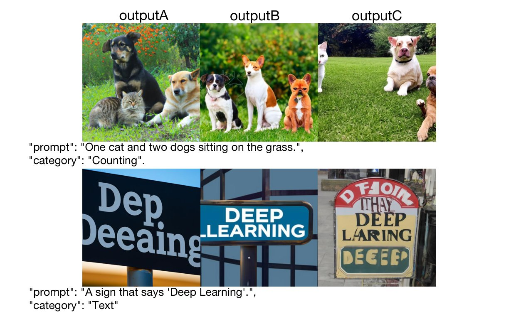
图 5：文本到图像生成任务的评分示例。
OutputA1: [1, 0.5]. SC=1: Prompt perfectly align. PR=0.5: Minor distortion on the cat’s facial features.
• OutputA1：[1, 0.5]。SC=1：提示词完全对齐。PR=0.5：猫的面部特征有轻微畸变。
OutputB1: [0.5, 0.5]. SC=0.5: 3 dogs appeared instead of 1 cat and 2 dogs. PR=0.5: Minor distortion was found on the animal’s face and the watermark.
• OutputB1：[0.5, 0.5]。SC=0.5：出现了 3 只狗，而应为 1 只猫和 2 只狗。PR=0.5：动物面部有轻微畸变，且有水印。
OutputC1: [1, 0.5]. SC=1: The prompt match perfectly with the image. PR=0.5: Minor distortion on the dog’s facial features.
• OutputC1：[1, 0.5]。SC=1：提示词与图像完全吻合。PR=0.5：狗的面部特征有轻微畸变。
OutputA2: [0.5, 1]. SC=0.5: A sign appeared, but failed to spell the word. PR=1: The image look generally real but with some lighting issues.
• OutputA2：[0.5, 1]。SC=0.5：出现了标识牌，但未能拼出单词。PR=1：图像总体看上去真实，但存在一些光照问题。
OutputB2: [0.5, 0.5]. SC=0.5: A sign appeared, but failed to spell the word. PR=0.5: The background looks so unnatural.
• OutputB2：[0.5, 0.5]。SC=0.5：出现了标识牌，但未能拼出单词。PR=0.5：背景看上去极不自然。
OutputC2: [0.5, 0]. SC=0.5: A sign appeared, but failed to spell the word. PR=0: Heavy distortion on both text and strong artifacts in the background.
• OutputC2：[0.5, 0]。SC=0.5：出现了标识牌，但未能拼出单词。PR=0：文字与背景均有严重畸变与明显伪影。
Mask-guided Image Editing.
掩码引导图像编辑。
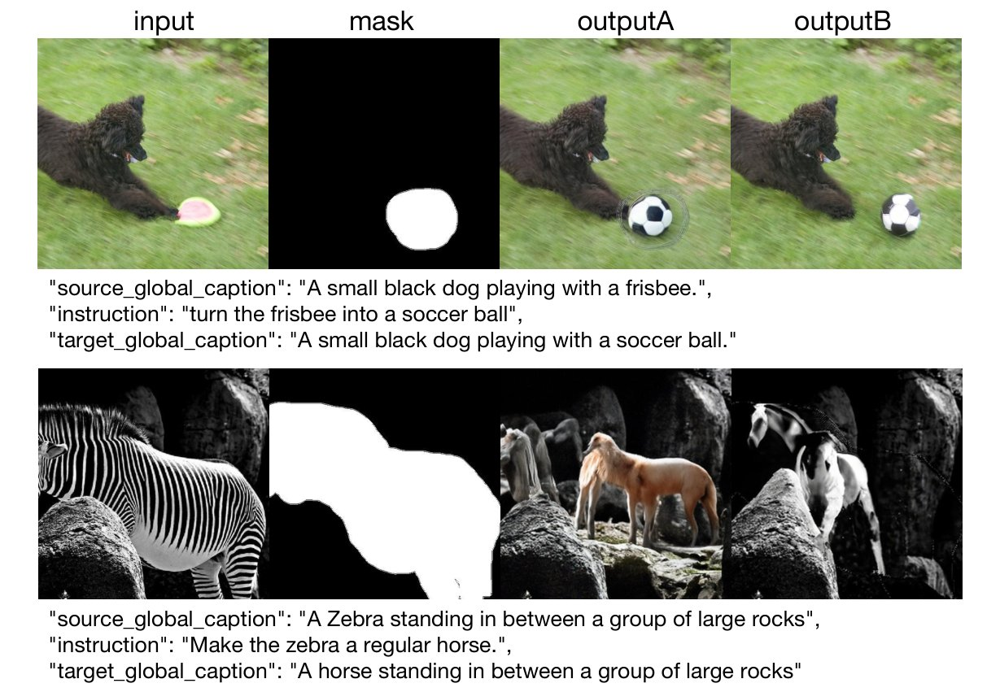
图 6：掩码引导图像编辑任务的评分示例。
OutputA1: [1, 0.5]. SC=1: Clearly generate the soccer. PR=0.5: The edit region does not blend well with the context.
• OutputA1：[1, 0.5]。SC=1：清晰地生成了足球。PR=0.5：编辑区域与上下文融合不佳。
OutputB1: [1, 1]. SC=1: Successfully add a soccer. PR=1: The soccer is naturally blended with the context.
• OutputB1：[1, 1]。SC=1：成功添加了足球。PR=1：足球与上下文自然融合。
OutputA2: [0, 0]. SC=0: Generated content can not be regarded as horse. PR=0: The middle left part is not natural.
• OutputA2：[0, 0]。SC=0：生成内容无法被视为马。PR=0：左中部分不自然。
OutputB2: [0.5, 0]. SC=0.5: The object is horse-like but not good. PR=0: The whole image is not natural.
• OutputB2：[0.5, 0]。SC=0.5：物体形似马但不够好。PR=0：整幅图像不自然。
Text-guided Image Editing.
文本引导图像编辑。
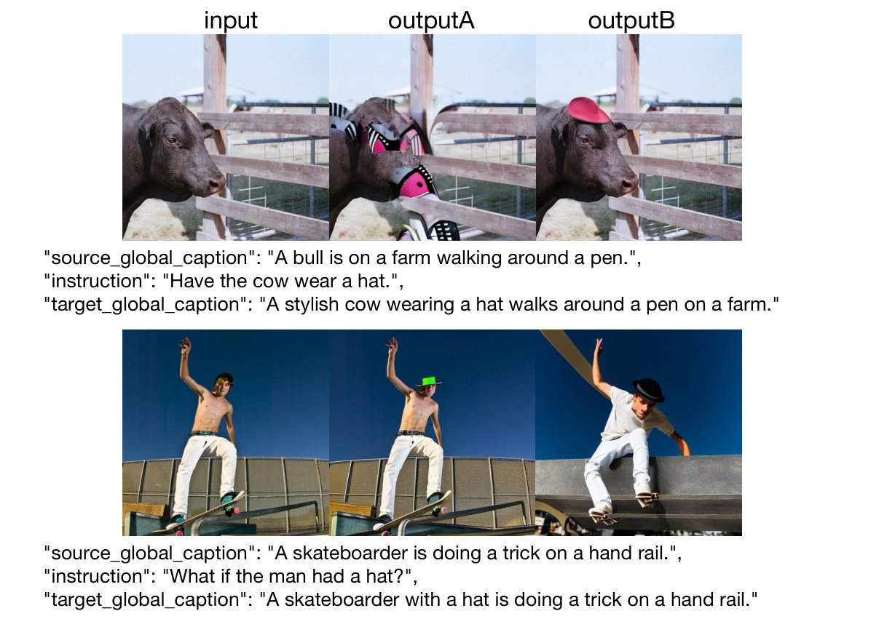
图 7：文本引导图像编辑任务的评分示例。
OutputA1: [0, 0]. SC=0: The image does not follow the instruction at all. PR=0: Heavy distortion on the cow’s facial features.
• OutputA1：[0, 0]。SC=0：图像完全未遵循指令。PR=0：牛的面部特征严重畸变。
OutputB1: [1, 1]. SC=1: The hat gives a nice specular reflection. PR=1: It looks real.
• OutputB1：[1, 1]。SC=1：帽子呈现出漂亮的镜面反射。PR=1：看上去真实。
OutputA2: [0.5, 0.5]. SC=0.5: The hat exists but does not suit well. PR=0.5: The important object look distorted.
• OutputA2：[0.5, 0.5]。SC=0.5：帽子存在但不太合适。PR=0.5：重要物体看上去有畸变。
OutputB2: [0, 0]. SC=0: The background completely changed. PR=0: The whole image look distorted.
• OutputB2：[0, 0]。SC=0：背景完全改变。PR=0：整幅图像看上去有畸变。
Subject-driven Image Generation.
主体驱动图像生成。
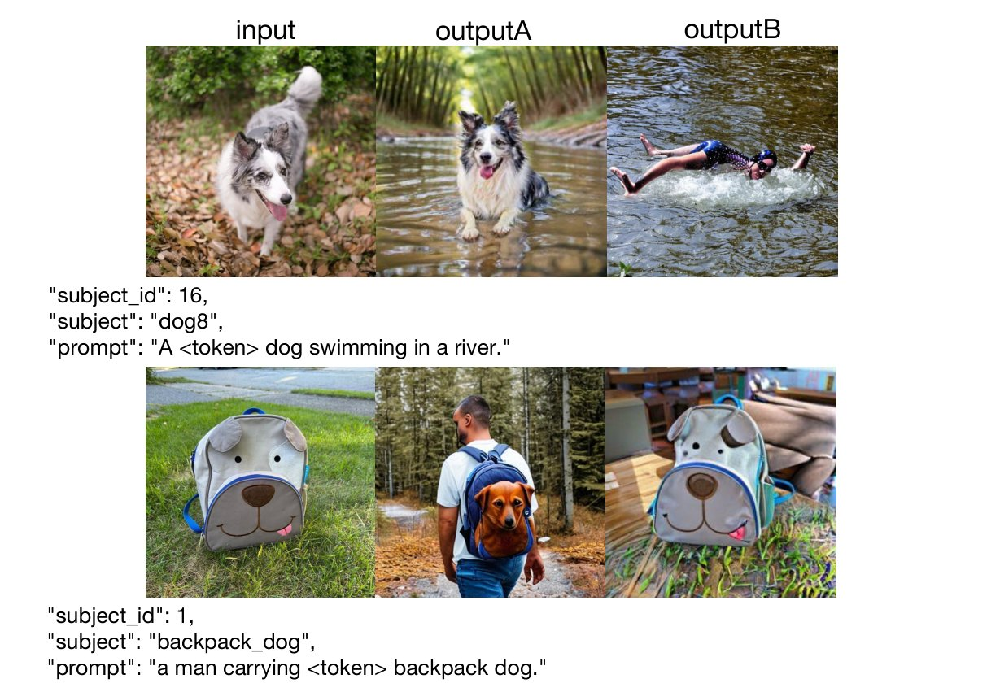
图 8：主体驱动图像生成任务的评分示例。
OutputA1: [1, 1]. SC=1: The output does match the subject and prompt. PR=1: It looks real.
• OutputA1：[1, 1]。SC=1：输出与主体和提示词相符。PR=1：看上去真实。
OutputB1: [0, 0]. SC=0: The subject dog missing. PR=0: Serious unusual body.
• OutputB1：[0, 0]。SC=0：主体狗缺失。PR=0：严重的肢体异常。
OutputA2: [0, 0.5]. SC=0: The output does not match the subject. PR=0.5: Some unusual sense on the backpack.
• OutputA2：[0, 0.5]。SC=0：输出与主体不符。PR=0.5：背包上有一些异常感。
OutputB2: [0, 0.5]. SC=0: The output does not match the prompt. PR=0.5: Some unusual sense on the desk with the grass.
• OutputB2：[0, 0.5]。SC=0：输出与提示词不符。PR=0.5：桌面与草地有一些异常感。
Multi-concept Image Composition.
多概念图像组合。
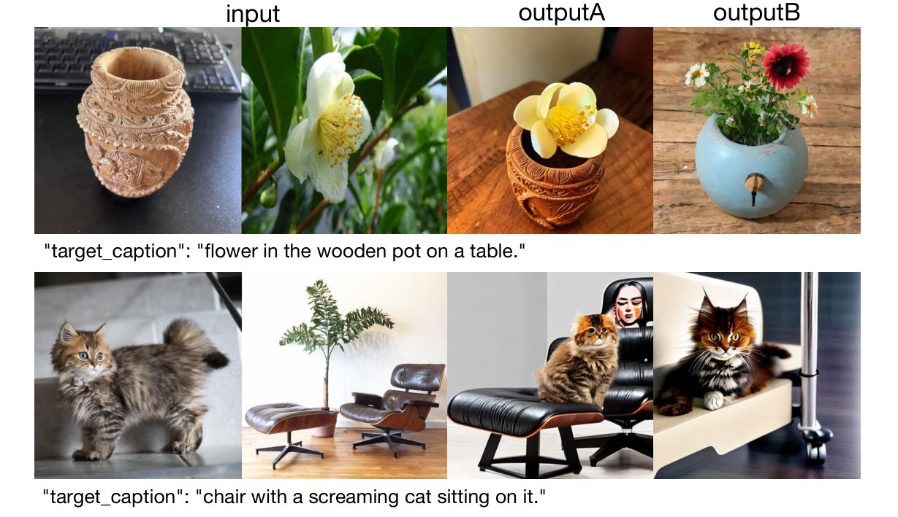
图 9：多概念图像组合任务的评分示例。
OutputA1: [1, 1]. SC=1: Both subjects accurately represent the intended subjects and the prompt actions match. PR=1: In general the image is natural and as real.
• OutputA1：[1, 1]。SC=1：两个主体都准确呈现了预期主体，且提示词动作吻合。PR=1：图像总体自然、真实。
OutputB1: [0, 1]. SC=0: Subjects are not correct even though prompt action matches. PR=1: The image looks real.
• OutputB1：[0, 1]。SC=0：尽管提示词动作吻合，主体并不正确。PR=1：图像看上去真实。
OutputA2: [0.5, 0.5]. SC=0.5: Both subjects accurately represent the intended subjects and but the prompt action doesn’t match. PR=0.5: There is a human face on the chair so the important subject chair looks unrealistic, but do not strongly detract from the image’s overall appearance.
• OutputA2：[0.5, 0.5]。SC=0.5：两个主体都准确呈现了预期主体，但提示词动作不吻合。PR=0.5：椅子上出现了人脸，使椅子这一重要主体显得不真实，但并未严重损害图像的整体观感。
OutputB2: [0, 0.5]. SC=0: Subject chair missing. PR=0.5: Minor distortion on the cat body and background.
• OutputB2：[0, 0.5]。SC=0：主体椅子缺失。PR=0.5：猫的身体与背景有轻微畸变。
Subject-driven Image Editing.
主体驱动图像编辑。
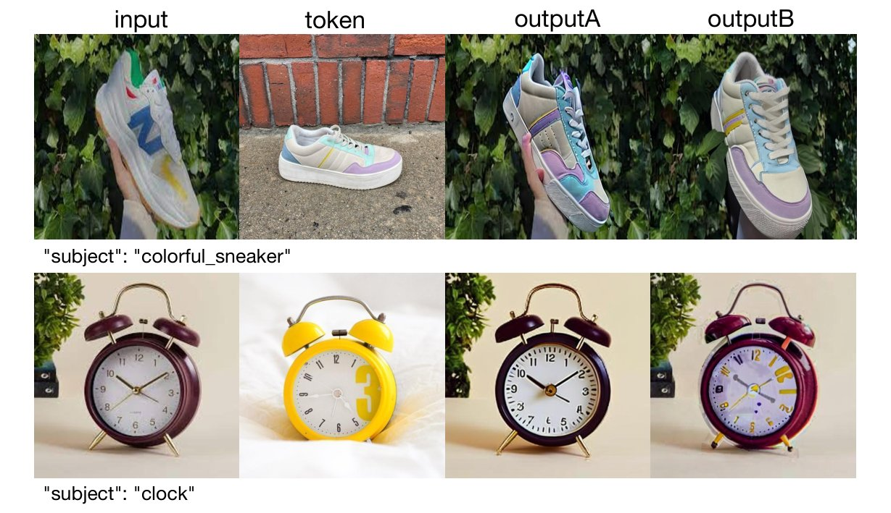
图 10：主体驱动图像编辑任务的评分示例。
OutputA1: [0.5, 0.5]. SC=0.5: Some details of the subject do not match the token. PR=0.5: Some unnatural sense on the hand features.
• OutputA1：[0.5, 0.5]。SC=0.5：主体的部分细节与词元不符。PR=0.5：手部特征有一些不自然感。
OutputB1: [0.5, 1]. SC=0.5: The subject does match the token, but removing the hand is an unnecessary edit. PR=1: It looks real.
• OutputB1：[0.5, 1]。SC=0.5：主体与词元相符，但去掉手是多余的编辑。PR=1：看上去真实。
OutputA2: [0, 0.5]. SC=0: Subject clock does not match. PR=0.5: Some distortion on the numbers of the clock.
• OutputA2：[0, 0.5]。SC=0：主体时钟不符。PR=0.5：时钟的数字有一些畸变。
OutputB2: [0, 0.5]. SC=0: Subject clock does not match. PR=0.5: Some distortion on the numbers of the clock and the edit region does not blend well with the context.
• OutputB2：[0, 0.5]。SC=0：主体时钟不符。PR=0.5：时钟的数字有一些畸变，且编辑区域与上下文融合不佳。
Control-guided Image Generation.
控制引导图像生成。
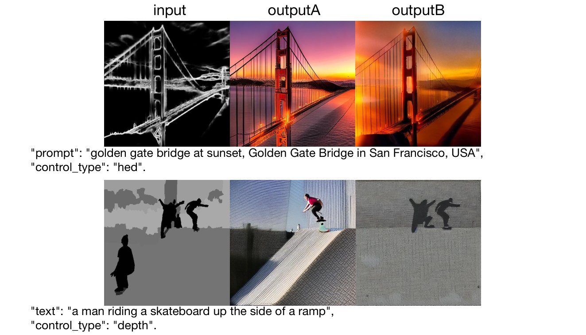
图 11：控制引导图像生成任务的评分示例。
OutputA1: [1, 0.5]. SC=1: The generated image perfectly described all the required attributes of the user prompt, and even work. PR=0.5: There are some missing details in the background. The details in the far-side are mostly blurred unnaturally.
• OutputA1：[1, 0.5]。SC=1：生成图像完整描述了用户提示词要求的全部属性，甚至包括作品。PR=0.5：背景缺失部分细节，远处的细节大多模糊得不自然。
OutputB1: [1, 0.5]. SC=1: The generated image perfectly described all the required attributes of the user prompt. PR=0.5: The details of golden gate bridge are mostly blurred unnaturally.
• OutputB1：[1, 0.5]。SC=1：生成图像完整描述了用户提示词要求的全部属性。PR=0.5：金门大桥的细节大多模糊得不自然。
OutputA2: [0, 0]. SC=0: The output does not correspond to the controlled depth image. PR=0: Heavy distortion on the background and the man.
• OutputA2：[0, 0]。SC=0：输出与被控制的深度图不对应。PR=0：背景与人物均有严重畸变。
OutputB2: [0, 0]. SC=0: The meaning of the text cannot be obtained from the output. PR=0: Heavy distortion.
• OutputB2：[0, 0]。SC=0：无法从输出中获知文本的含义。PR=0：严重畸变。
Dataset Details.
数据集细节。
Dataset Distribution.
数据集分布。
(a) 文本到图像生成数据集
(b) 掩码引导 / 文本引导图像编辑数据集
(c) 主体驱动图像生成数据集
(d) 多概念图像组合数据集
(e) 主体驱动图像编辑数据集
(f) 控制引导图像生成数据集
图 12：各任务提示词文本中出现的物体。
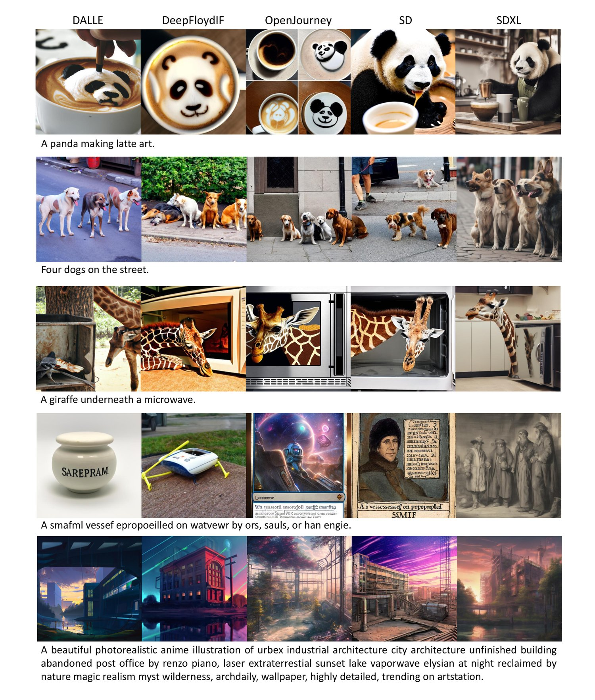
图 13：来自文本引导图像生成数据集与 ImagenHub 输出的更多样本。
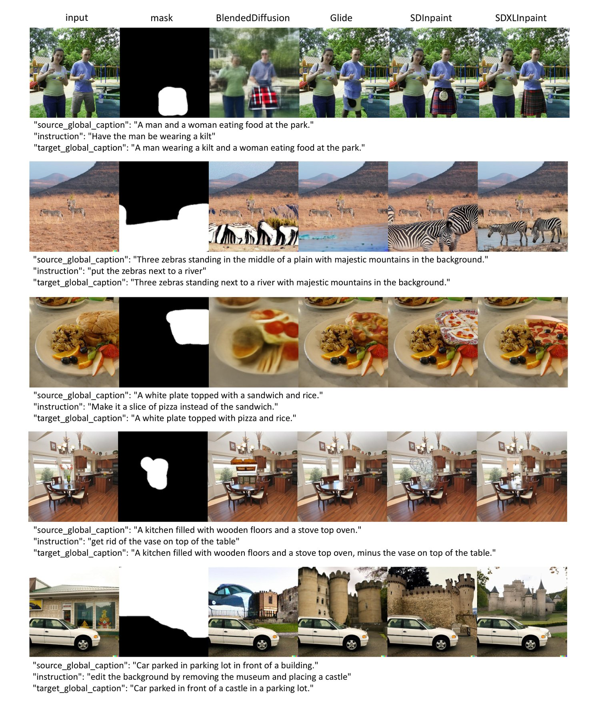
图 14：来自掩码引导图像编辑数据集与 ImagenHub 输出的更多样本。
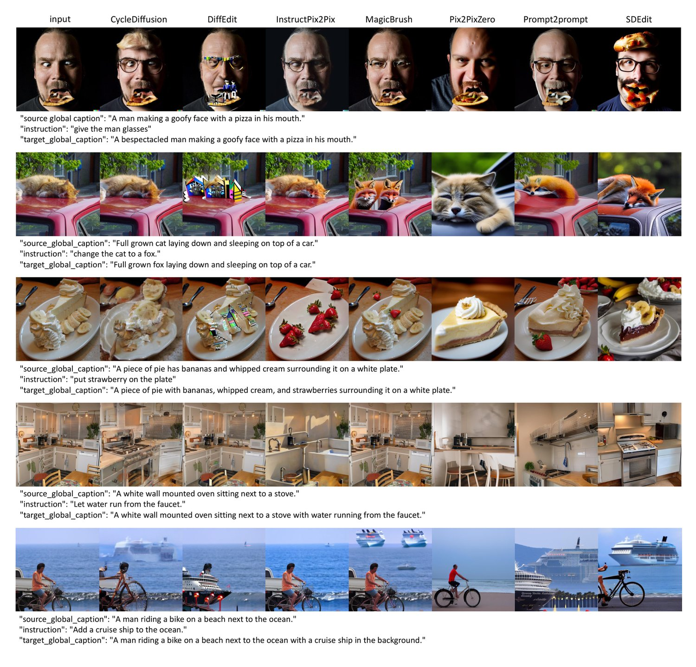
图 15：来自文本引导图像编辑数据集与 ImagenHub 输出的更多样本。
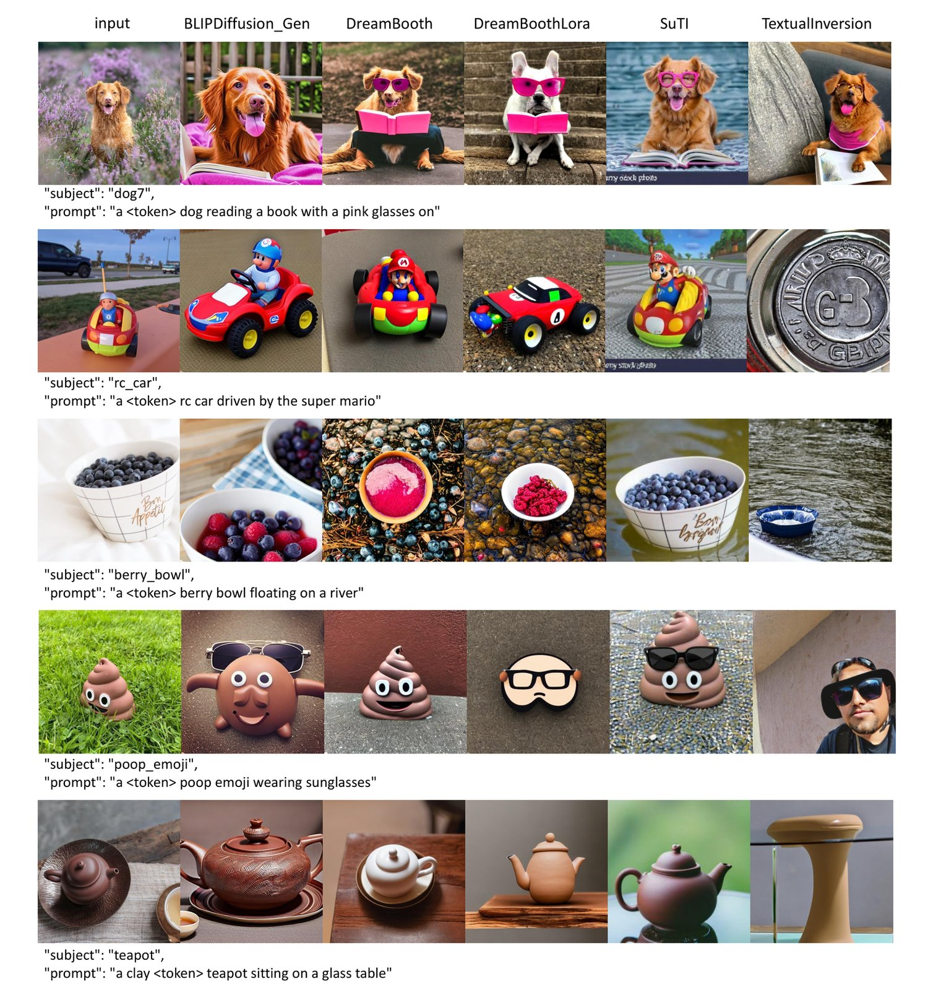
图 16：来自主体驱动图像生成数据集与 ImagenHub 输出的更多样本。
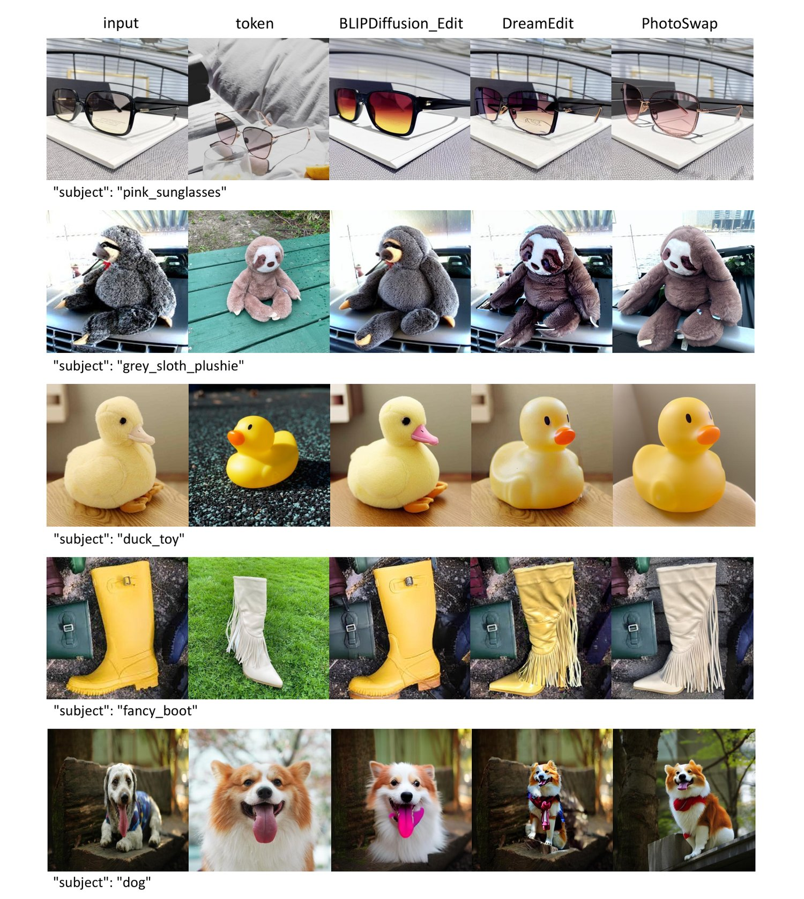
图 17：来自主体驱动图像编辑数据集与 ImagenHub 输出的更多样本。
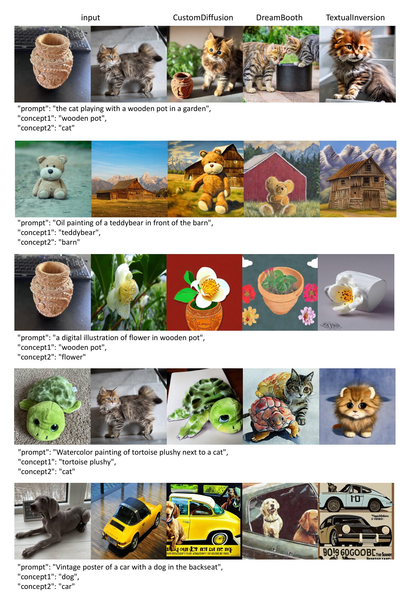
图 18：来自多概念图像组合数据集与 ImagenHub 输出的更多样本。
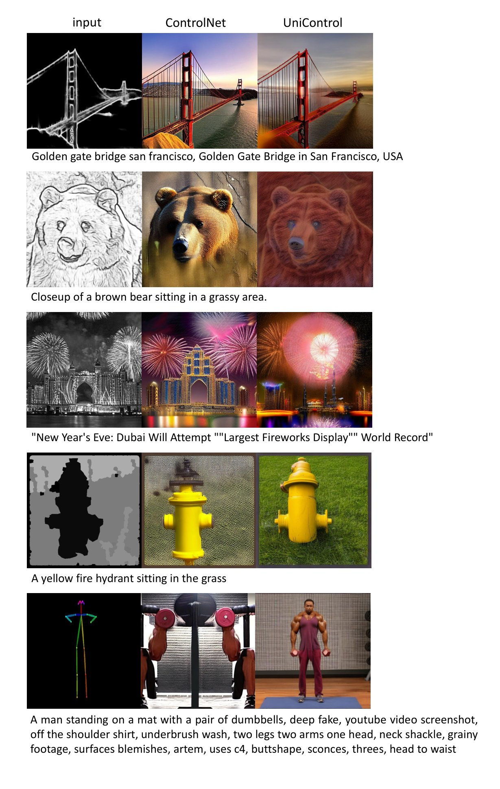
图 19：来自控制引导图像生成数据集与 ImagenHub 输出的更多样本。
Prolific. In this work, we used the Prolific platform to receive human feedback on rating AI-generated images. We applied the following filter for worker requirements when creating the project: 1) The Worker’s primary speaking language has to be English. 2) Worker must complete rating one set of images (around 150-200 images) in one go. We do that to ensure workers can fully understand the rating instructions, and each set of image is rated by the same person so we can perform Inter-rater Reliability Analysis across the whole set of the benchmark. Workers will rate each image in [SC, PQ], while SC in [0, 0.5, 1] and PQ in [0, 0.5, 1]. Instructions and images are hosted on a website. Workers are provided with detailed instructions and rating examples to assist their rating process. Workers will submit the responses in a tsv file. To validate the annotation quality, we selected a few (around 10-20) significant samples with obvious ratings for each task. We rated them by ourselves and then used them as a reference to determine the performance of annotators. Poor performance will be rejected.
Prolific。本工作使用 Prolific 平台收集对 AI 生成图像打分的人工反馈。创建项目时，我们对工作者施加了如下筛选条件：1）工作者的主要语言须为英语；2）工作者须一次性完成一组图像（约 150～200 张）的评分。这样做既能保证工作者充分理解评分说明，也能让同一组图像由同一人评分，从而在整份基准上做评分者间信度分析。工作者对每张图像给出 [SC, PQ] 评分，SC 取值于 [0, 0.5, 1]，PQ 取值于 [0, 0.5, 1]。说明与图像托管在网站上，工作者可获得详细指示与评分示例以辅助评分，并以 tsv 文件提交结果。为检验标注质量，我们为每个任务挑选了若干（约 10～20 个）评分明显的代表性样本，自行打分后作为参照来衡量标注者的表现，表现不佳者将被驳回。
Sample Size Consideration of Human Raters.
人工评分员样本量的考量。
We studied the effect on the number of human raters. We recruited 10 human raters on Prolific to rate 15 samples generated using the Midjourney model. In Figure 20, the mean scores seem to remain relatively constant across the number of raters, with a slight increase at 4 raters and the highest mean score at 5 raters. The values for the mean scores are hovering around 0.70, as the error bar shows the standard deviation increases. On the other hand, Krippendorff’s Alpha generally decreases as the number of raters increases. It starts at around 0.70 with 3 raters and has a noticeable drop at 10 raters to 0.64. We can observe that the mean score will be always consistent, while the reliability of that score as measured by Krippendorff’s Alpha decreases slightly as more raters are involved, as more variance is introduced. To make our human evaluation protocol efficient, we picked 3 as the number of human raters.
我们研究了人工评分员数量的影响，在 Prolific 上招募 10 名评分员，对使用 Midjourney 模型生成的 15 个样本打分。图 20 显示，均值在不同评分员数量下基本保持稳定，在 4 名时略有上升，在 5 名时达到最高；均值徘徊在 0.70 附近，误差棒显示标准差随评分员数量增加而增大。另一方面，Krippendorff’s Alpha 总体随评分员数量增加而下降：3 名时约为 0.70，到 10 名时明显降至 0.64。由此可见，均值始终稳定，而以其衡量的分数信度（Krippendorff’s Alpha）随评分员增多而轻微下降，因为引入了更多方差。为使人工评价流程高效，我们选择 3 名作为评分员数量。
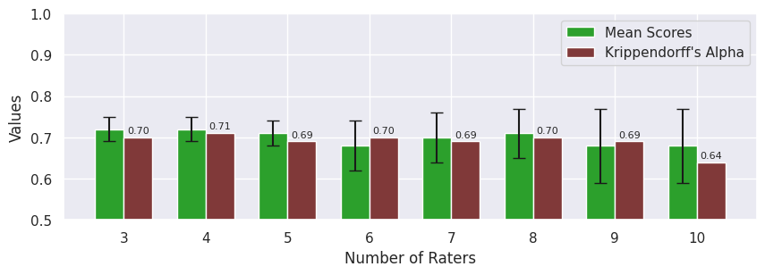
图 20：某一模型上不同评分员数量对应的总体人工评分均值与 Krippendorff’s Alpha。
Experiment Transparency. We are hosting the benchmarking results publicly. Thus showing the true performance of each model. Viewers can gain their insights from the result by looking at the actual results. Our framework encourages future researchers to release the human evaluation set generation results publicly. By standardizing the human evaluation protocol, human evaluation results would become far more convincing with the experiment transparency.
实验透明性。我们公开托管基准评测结果，从而展示每个模型的真实性能；观看者可以直接查看实际结果并得出自己的见解。我们的框架鼓励未来的研究者公开发布人工评价集的生成结果。通过规范人工评价流程，借助实验透明性，人工评价结果将更具说服力。
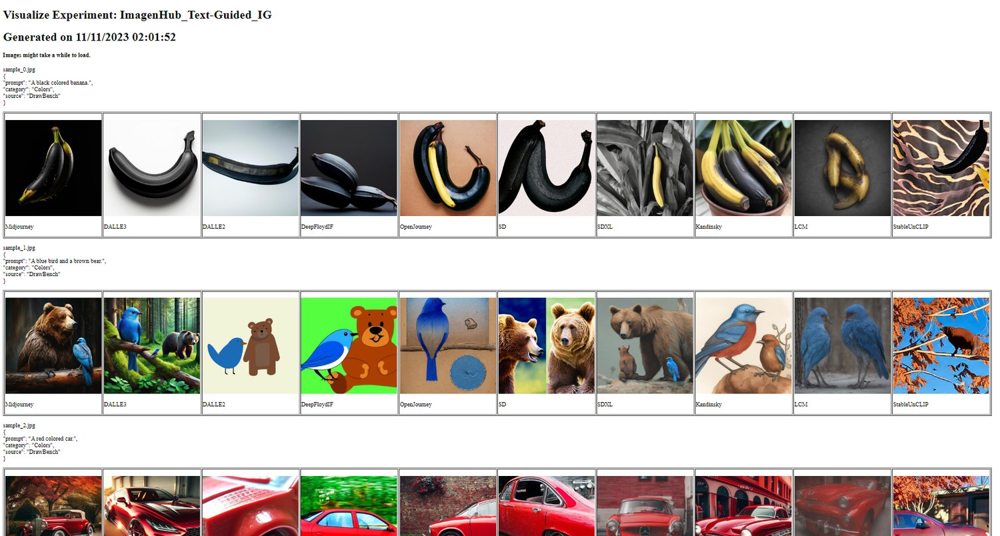
图 21：Imagen Museum 网页设计（文本引导图像生成页面）。
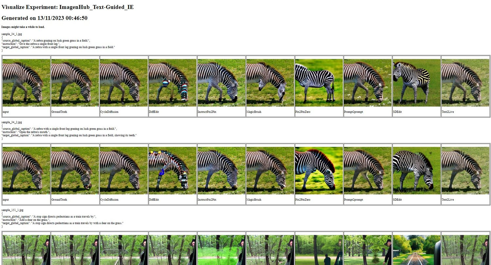
图 22：Imagen Museum 网页设计（文本引导图像编辑页面）。
Please refer to https://github.com/ChromAIca/ChromAIca.github.io for the visualization results.
可视化结果参见 https://github.com/ChromAIca/ChromAIca.github.io。
Third parties are welcome to use our provided tools and frameworks for their work. Here is a quick walkthrough of how a third-party member can extend the framework to support their own model’s inference. We use the Text-Guided Image Generation (Text-To-Image) task as an example for the sake of simplicity.
欢迎第三方使用我们提供的工具与框架开展工作。下面简要说明第三方成员如何扩展框架以支持自己模型的推理。为简便起见，我们以文本引导图像生成（Text-To-Image）任务为例。
The infermodel class is designed to have the following two methods:
infermodel 类设计了如下两个方法：
__init__(args) for class initialization.
• __init__(args)：用于类的初始化。
infer_one_image(args) to produce 1 image output. Please try to set the seed as 42.
• infer_one_image(args)：生成 1 张图像输出。请尽量把随机种子设为 42。
In that case, you will add a new file in imagen_hub/infermodels folder. imagen_hub/infermodels/awesome_model.py
此时，你需要在 imagen_hub/infermodels 文件夹下新增一个文件 imagen_hub/infermodels/awesome_model.py。
Then a line can be added in imagen_hub/infermodels/__init__.py:
然后在 imagen_hub/infermodels/__init__.py 中添加一行：
And modify the template config.yml file and add your own model.
接着修改模板配置文件 config.yml，加入你自己的模型。
Finally run
最后运行
Please refer to https://imagenhub.readthedocs.io/en/latest/Guidelines/custommodel.html for details.
详情参见 https://imagenhub.readthedocs.io/en/latest/Guidelines/custommodel.html。
Custom inference of multiple models.
多模型的自定义推理。
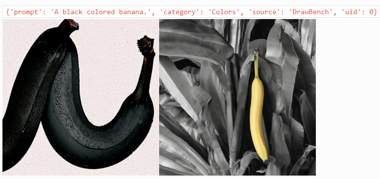
图 23：该自定义推理示例中生成的图像。
Evaluate images with autometrics.
用自动指标评价图像。
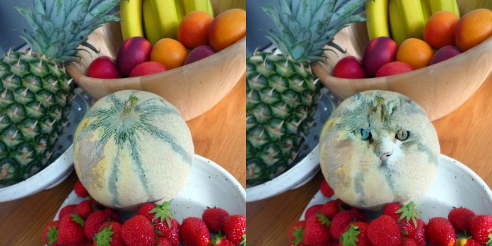
图 24：该自动指标示例中评价的图像。
Please refer to https://imagenhub.readthedocs.io/en/latest/Guidelines/deepdive.html for details.
详情参见 https://imagenhub.readthedocs.io/en/latest/Guidelines/deepdive.html。